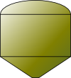
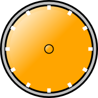

MBLogic
for an open world in automation
MBLogic
for an open world in automation
Gauges, Tanks and Hoppers
Dial and Column Gauges and Tanks/Hoppers
Column gauges and tanks or hoppers work in an identical and differ only in their appearance. Both use a "fill" property on a narrow "column". Dial gauges use a rotating pointer.
Gauge Columns and Pointers
| Type | Name | Description | HMIBuilder Name | |
|---|---|---|---|---|
| Column gauge column.1 | gauge_column_<colour> | Active column for a column gauge. | Column Gauge Rectangle | |
| Tank column.1 | tank_column_<colour> | Active column for a tank. | Tank Column Polygon | |
| Dial gauge pointer.2 | gauge_dialpointer_<colour> | Pointer for a dial gauge. | Dial Pointer |
Note1: Older versions of HMIBuilder permitted only a fixed number of gauge columns. This limit no longer applies, and columns may now be repeated as many times as desired.
Note2: Older versions of HMIBuilder required the "id" to be applied to dial pointers in a different way than with other widgets. This no longer applies, and the "id" should be applied to the outer element as is the case with other widgets.
HMIBuilder Parameters for Tank and Column Gauges
| Parameter | Type | Values | Description |
|---|---|---|---|
| Output Tag | Option menu | Address tags | The HMI server tag to read the current state from |
| Minimum Value | Data entry box | Integer | The minimum data range. This value will be subracted from the monitored value. |
| Maximum Value | Data entry box | Integer | The maximum data range. The monitored value (minus the minimum value) will be divided by this value when scaling the number to fit within the required range. |
Note: If the minimum is 100 and the maximum is 5100, a reading of 4000 will be scaled to (4000 - 100) / 5100 * 100 = 76%.
HMIBuilder Parameters for Dial Pointers
| Parameter | Type | Values | Description |
|---|---|---|---|
| Output Tag | Option menu | Address tags | The HMI server tag to read the current state from |
| Dial Offset | Data entry box | Integer | The offset of the "0" position in degrees from the bottom of the dial. |
| Dial Maximum | Data entry box | Integer | The maximum dial angle to use. |
| Minimum Data Value | Data entry box | Float | The minimum data range. |
| Maximum Data Value | Data entry box | Float | The maximum data range. |
Note: The dial will apply the following calculation to the monitored value:
((newdata - DataMin) / DataMax) * (DialMax - DialMin) + DialMin
Example: If the dial offset is 30 degrees, the maximum dial position is 330 degrees, the minimum data value is 100 and the maximum data value is 5100, a reading of 4000 will be scaled to ((4000 - 100) / 5100) * (330 - 30) + 30 = 259.4 degrees.
Rotation is measured in degrees from the bottom of the dial, so the scale factors should be calculated to give the desired resulting position.
Backgrounds
These are normally combined with columns or pointers to form gauge displays. These are purely decorative backgrounds and have no input or output functions on their own.
| Type | Name | Description | |
|---|---|---|---|
| Column gauge background. | gauge_columnbg_<colour> | Passive background for a column gauge. | |
|  | Tank background. | tank1_bg_<colour> | Passive background for a tank column. |
|  | Dial gauge background. | gauge_dialbg_<colour> | Passive background for a dial gauge. |